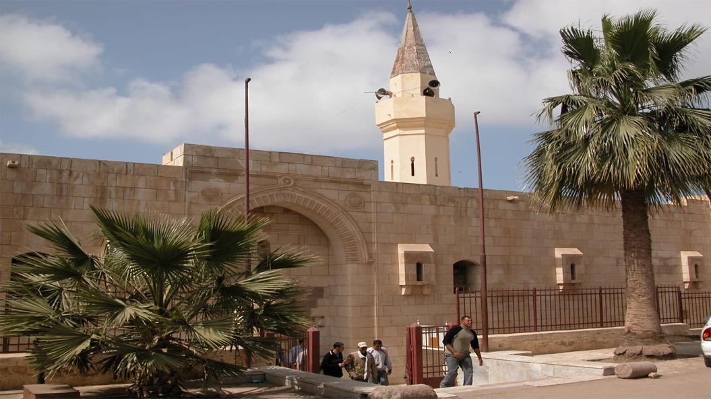
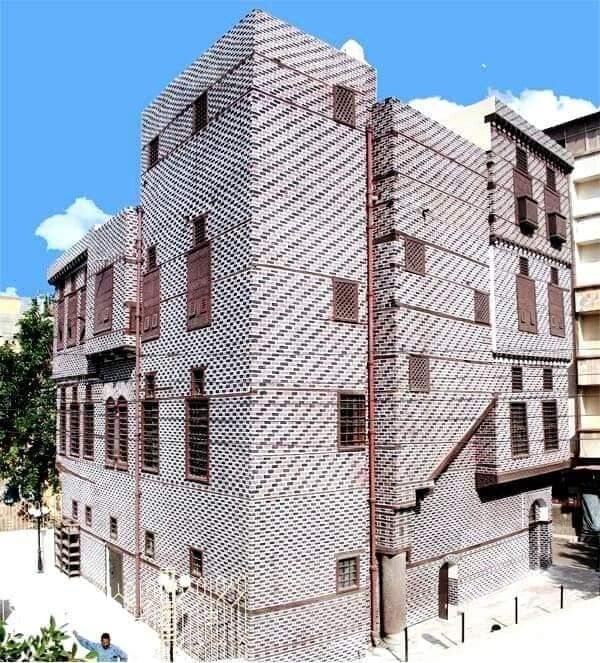
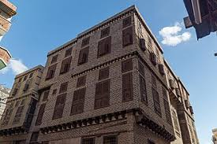
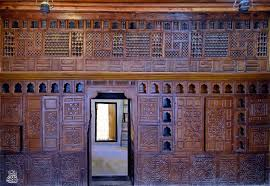

قلعة أثرية بناها السلطان الأشرف أبو النصر قايتباي عام 886 هـ / 1482م لحماية الساحل من الغزوات. تقع على بعد 7 كم من مدينة رشيد، وهي ثاني قلعة يبنيها قايتباي بعد قلعة الإسكندرية. شهدت اكتشاف حجر رشيد عام 1799 أثناء الحملة الفرنسية.

يقع في منزل "عرب كلي" الأثري الذي يعود للقرن 18، ويتكون من 4 أدوار. يضم قطعاً أثرية وصوراً وصناعات يدوية حرفية شعبية ومخطوطات أثرية، بالإضافة إلى نسخة طبق الأصل من حجر رشيد. تم اختيار المنزل ليكون متحفاً قومياً تخليداً لذكرى مقاومة حملة فريزر.

بُني عام 1808 ميلادية على يد عثمان أغا الأمصيلي، وكان جندياً بالجيش العثماني. يتميز بزخارفه الخشبية المطعمة بالعاج والصدف، والمشربيات الخرط الدقيقة. يتكون من 3 أدوار تضم حجرات للرجال والحريم ومخازن.

تم بناؤه عام 1740 على يد عبد الرحمن البواب الميزوني. يتكون من 4 أدوار، وقد شهد ارتباطاً تاريخياً بالحملة الفرنسية حيث تزوجت إحدى سكانه من القائد الفرنسي مينو.